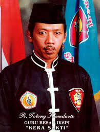
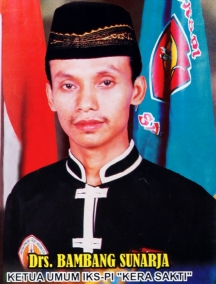

IKSPI(ikatan keluarga silat putra Indonesia"kera sakti")
IKSPI Kera Sakti semula berdiri dengan nama IKS Putra Indonesia (IKSPI). Raden Totong Kiemdarto mempelajari gerakan beladiri kungfu aliran utara dan selatan dari pendekar kungfu beretnis Tionghoa yang ada di Indonesia. Ia dikenal telah lama belajar pencak silat di beberapa perguruan silat yang usianya lebih tua di Madiun.[1]
Seiring berkembangnya perguruan, IKSPI diberi tambahan nama "Kera Sakti" karena masyarakat saat itu lebih mengenal jurus keranya daripada nama perguruannya.
Pada tahun 1983, beberapa murid angkatan pertama dan kedua mulai mengembangkan ajaran perguruan di berbagai tempat tidak hanya di bekas wilayah Keresidenan Madiun, tetapi juga di luar Madiun.

R.Totong Kiemdarto
Sosok Totong Kiemdarto sendiri merupakan warga Kota Madiun yang lahir pada 20 Oktober 1953. Totong Kiemdarto meninggal dunia pada 24 Desember 1997 Totong merupakan putra dari pasangan almarhum Sukiman Prawiro Suwiryo dan almarhumah R. A. Supanti.
IKSPI Kera Sakti ini berdiri sebagai peguruan silat pada 15 Januari 1980. Sosok Totong Kiemdarto ini mendirikan perguruan silat Kera Sakti ini pada usia yang relatif muda, yakni 27 tahun.
Ketua Umum IKSPI Kera Sakti, Bambang Sunarja, menceritakan Totong Kiemdarto merupakan sosok sentral dalam pendirian perguruan silat Kera Sakti. Sebelum mendirikan IKSPI Kera Sakti, Totong memang sudah lama belajar pencak silat di beberapa perguruan silat yang usianya lebih tua di Madiun.
Baca Juga: Makam Pendiri Perguruan Silat Kera Sakti Dipindah dari Madiun ke Caruban
“Seusai pengakuan beliau [Totong Kiemdarto], dia pernah ikut perguruan silat di Madiun yang usianya lebih tua. Tetapi memang beliau belum sampai disahkan sebagai anggota,” kata dia saat proses pemindahan makam Totong Kiemdarto dari Kota Madiun ke Padepokan Pusat IKSPI Kera Sakti di Kabupaten Madiun, Rabu (19/10/2022).
Saat masih kecil, Totong memang diasuh oleh keluarga etnis Tionghoa, yakni keluarga R.M. Sentardi dan Oey Kiem Lian Nio. Kedekatannya dengan warga etnis Tionghoa itu menjadikannya tertarik untuk mendalami kungfu atau bela diri asal China.
“Beliau memang banyak bergaul dengan orang-orang China ya. Jadi saat itu, muncul ide untuk membangun perguruan silat. Tapi, beliau ini orang Jawa asli,” jelasnya..

Ki Hadjar Hardjo Oetomo
Setelah tahun 1997 Guru Besar IKS PI Kera Sakti meninggal, Drs. Bambang Sunarja mendapatkan amanah dari keluarga untuk melanjutkan perjuangan guru besar supaya IKS PI tidak berhenti.
Pada saat itu Drs. Bambang Sunarja berusia 31 tahun, beliau merasa belum siap, untuk memimpin IKSPI Kera Sakti. Tetapi karena ini merupakan amanah yang harus di jalankan. Akhirnya setelah 40 hari beliau bergerak menjalankan amanah tersebut, memimpin IKSPI Kera Sakti yang sekarang saudara ikuti.